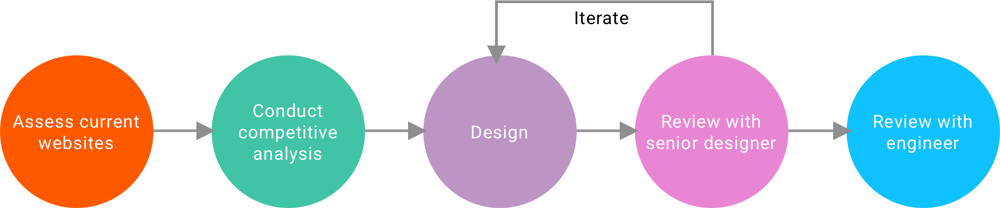

UX Design Internship at VF Corporation
VF is an apparel and footwear company owning brands like Vans and The North Face. I helped to improve both desktop and mobile web experiences for different brands’ e-commerce platforms.
- Project Brief
- 2017.6 ~ 2017.12
- My Role
- UX Designer
- Method & Skills
- Competitive Analysis
- Wireframing
- Iteration
- Tools & Softwares
- Sketch
- Invision
- Wix
Internship Introduction
I work under the digital platform, which maintains all the 8 brands' e-commerce websites including Vans, the North Face, Timberland, Jansport, Lee, Wrangler, Reef and Smartwool. The team adopts agile development process. As a UX Designer, I work closely with other designers as well as the PM and developers.
My work can be divided into two parts. One is to improve the current online shopping experience by digging into every aspect of the shopping process, the other is to improve the visual consistency of one brand by creating a new digital style guide.

Quick Navigation
Part 1: Detail Design
A complete online shopping process includes searching/browsing, comparing different products, viewing product detail information, adding to cart, checking out and shipping. I have dealt with problems regarding each aspect of the process. Here I will pick three design tickets that I finished to illustrate how we improve the user experience.
Searching: Zero Results Recommendation
1. Problem
Studies show that 30% of online shoppers start with a site search. In addition to its convenience, generating "no result" page can be really annoying. My job is to update Wrangler's search results template to provide more guidance when there are no product results delivered.One specific requirement here is the focus should be on the top portion of the page only.
2. Comparative Analysis
3. Design Solutions
Considering the limited area (top portion of the page) and the current style guide, I come up with four different design options.
Option 1: Traditional Layout
Clear column layout to accommodate every desired element.
Option 2: Centered design with emphasis on trending searches
Turning key words into tabs to increase the click rate.
Option 3: Compressed footprint to enable best sellers above fold
(Recommended)
Option 4: Tabbed related/trending options
- Shoppers can still see "best seller" section
- Tabbed design saves webpage's real estate on both web and mobile version
Comparing: Create a comp for the compare tool
1. Problem
Most ecommerce websites provide comparison among different products. When using the compare tool, consumers can select up to 4 products. Currently on Timberland, there is no message or action if a consumer tries to select a 5th. A comp showing a message saying they can only select up to 4 products is needed.
Briefly speaking, this comp should indicate the unavailability of the 5th product, prompt consumers to compare the selected 4 products, and should not require too much work from developers.
2. Design Solutions
Option 1: Inline message below compare button
Display messaging below the compare button with minimal styling.
The movement of it appearing give it clear visibility to consumers.
Option 2: Styled message on top of star rating
Display messaging in a styled alert box on top of the star rating.
Different from the previous option, this does not have restrictions on character count to worry about whether it fits within an alloted space.
Option 3: Message on hover
On hover of the compare button, the text and color change to let user know they've reached the limit.
This does not require additional UI with messaging to display on the page.
Option 4: Tooltip
Display messaging within the standard tooltip.
While the tooltip obscures product details above the button, it can be easily dismissed.
(Recommended)
Option 5: Modal overlay
Display messaging in a modal overlay.
This design requires no changes to the current PLP.
Additionally, this design will encourage users to move forward to compare current selected products.
Adding to Cart: Redesign the minicart
1. Problem
Mini cart is an important place where shoppers can quickly check the added products and move forward to checking. However, the current dropdown minicart designs didn't take into account screen heights. This problem happens among all brands owned by VF, so a platform-level solution is needed.
There are two kinds of minicart existing on the current 8 brands' websites: dropdown style and slide-in style.
2. Competitive Analysis
3. Design Solutions
Based on the competitive analysis, I concluded the following 3 elements that are essential to our minicart design.
1. Persistent price and checkout CTA
This persistent part is always visible to users in spite of the browser window's size. Make sure users can easily find it.
2. Compact product description
This enables more products being displayed in a limited area. Save users' effort to scroll down too much.
3. Fluid height
Fluid height makes
Option 1: Top checkout compact
Option 2: Bottom persistent checkout
(Recommended)
Option 3: Multiple payment
After users finishing viewing the whole list of products, their attention are located at the bottom of the minicart. In this case, they don't need to go back to the top of the page to move forward to the checkout stage. Multiple payment methods are enabled among all brand owned by VF, this design will encourage quick checkout.
Part 2: Digital Style Guide
Audit current Digital Style Guides for Reef
1. Problem
Over time, the digital style guides have lost full alignment with the site experiences as brands have added enhancements and other general changes and additions.
The goal is to complete an audit of each brand’s experiences and match that against the current digital style guides to see where the style guides need to be updated or expanded.
I was assigned to create a new style guide for Reef based on its current digital style guide.
2. Current Style Guide
The current the style guide is an interactive website. The bad thing about it is it's impossible to use these elements directly when designing new mockups. So we decided to create a sketch file where elements can be copied and reused easily.
3. Final Deliverable

4. Detail Thinking
1. Check the color contrast between background color and text color.
2. Leave space for future customized design to maintain the consistency.
3. Provide recommendations for font sizes while trying to minimize the modification work for front-end engineers.